Google Antigravity（本堂主工具）
本堂統一使用 Google Antigravity，依課程指定版本安裝獨立 App 或 IDE。Codex 是後續課程，本堂不要求安裝。第一次只開放練習資料夾。
FIELD LAB 01｜3 小時醫療救護實作
課前準備環境；課中依序選題、理解 Agent、用 Antigravity 寫規格與測試計畫、實作、驗證、安全檢查與發布。Codex 留到後續課程。今天做的是低風險教學原型，不是正式醫療系統。
選擇你的工作視角
開始前先把風險降到最低
依任務安裝，不是越多越好
本堂統一使用 Google Antigravity，依課程指定版本安裝獨立 App 或 IDE。Codex 是後續課程，本堂不要求安裝。第一次只開放練習資料夾。
讓 Agent 能執行資料整理、CSV、簡易網頁伺服器與自動化腳本。
Python 官方下載 ↗python --versionpy --versionpython3 --version
Git 用於保存版本與推送；GitHub Desktop 是圖形介面選配。Agent 要用終端機 Git 時，仍須驗證 git 命令。
git --version
閱讀 Agent 建立的 HTML、CSS、JavaScript、Markdown 與錯誤訊息。
VS Code 官方下載 ↗只有使用 npm、React、JavaScript 建置工具或特定 MCP 時才需要。
Node.js 官方下載 ↗node --version
建立版本庫與免費 github.io 網站。請開啟兩步驟驗證。
延伸工具為選配：Docker Desktop／Compose 安裝與驗證；Firecrawl 可先用瀏覽器 Playground 練習。請先完成本課程的核心環境。
依官方安裝程式指示安裝；若畫面提供「Add python.exe to PATH」，請勾選。完成後關閉並重新開啟命令提示字元，再輸入 python --version 或 py --version。macOS 常使用 python3 --version。
每組只選一條核心流程
把重複紀錄做成可驗證流程，但不讓 AI 自動下臨床決定。
重視手機操作、離線備援、時間壓力與現場錯誤容忍。
先自行形成判斷，再用 AI 比較、查證與校準信任。
控制訓練節奏、標準動作、故障注入與教官覆寫。
把學習目標、形成性評量與改善資料一起設計。
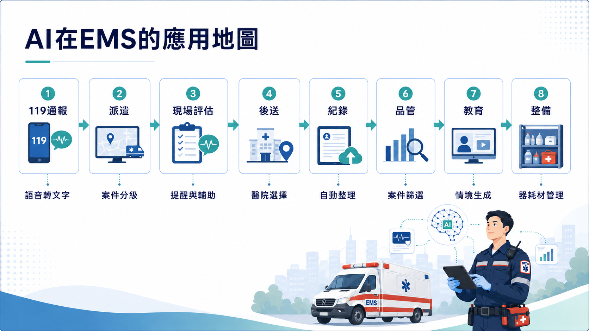
題庫來源整理可接續 Firecrawl 單頁擷取與人工覆核練習；需要讓各組使用一致的網站環境，可接續 Docker Compose 本機操作。
可以協助找候選來源，但採「官方網域白名單 → 先列清單 → 人工確認 → 才下載 → 保留來源與雜湊」流程。不得繞過登入、驗證或下載商業題庫；授權未確認前不公開。
必須標示「教學模擬，非真實裝置或即時醫療指示」，流程由合格講師依現行指引核准。
接 LINE、帳號或正式資料庫前，先畫資料流與人工停止點。
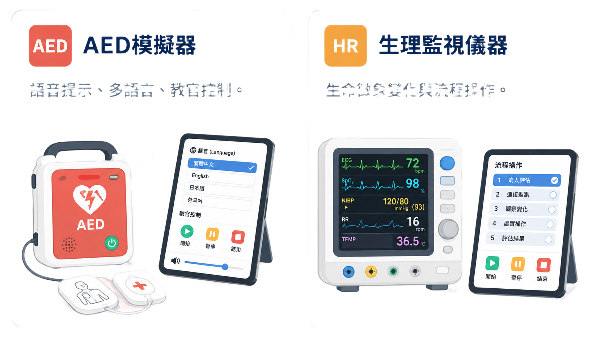
名詞不用分頁找，先看它們一起做什麼
從你提出需求，到 Agent 使用模型與工具完成作品，再到資料保存與發布：這些名詞描述不同層次，不是一份全部都要安裝的清單。展開一組，就能同時看定義、關聯與醫療救護例子。
同一處查定義、看關係、看醫療救護例子
| 名詞 | 主要分類 | 關聯 |
|---|---|---|
| UI 使用者介面 | 介面與體驗 | 包含 GUI、CLI 等操作形式 |
| UX 使用者體驗 | 介面與體驗 | 涵蓋使用流程、回饋、可及性與整體感受 |
| CLI 命令列介面 | 開發與發布 | UI 的一種，以文字命令操作工具 |
| Rules 規則 | 規則與流程 | 約定 AI 的行為與限制 |
| Skill 技能 | 規則與流程 | 提供可重用的方法與資源 |
依用途分類：AI 核心＝模型、Agent 與分工；資料＝提示詞、上下文與資料處理；開發與發布＝網站實作、CLI、版本與交付；介面與體驗＝UI、UX 與互動設計；規則與流程＝Rules、Skill 與任務交代；安全與驗證＝測試、紀錄、權限與人工覆核。同一組涉及多種用途時，可出現在多個分類。
讀圖方式：包含＝分類；使用＝組合；箭頭＝資料或任務方向。Rules 是行為準則，Skill 是可重用方法，Prompt 交代本次任務；Tool 提供操作能力，MCP 是連接協定。
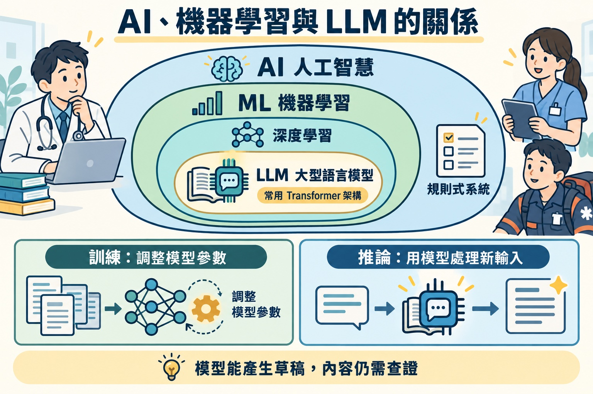
Transformer 是神經網路架構；LLM 是大型語言模型；聊天介面是讓人使用模型的產品介面。架構、模型、產品是不同層次。模型能寫出程式，不表示它已執行並驗證程式。
訓練會透過資料調整模型參數；推論是用已訓練的模型處理新輸入。醫師貼一段虛構病例請模型整理，是推論；把文件交給聊天工具，不代表當場重新訓練了模型。
Token 是模型處理的片段，不固定等於一個中文字或英文單字。Attention 讓不同位置的資訊彼此參照；流暢輸出仍可能包含錯誤，不能當成事實查證。
教學者的應用：先理解模型能產生草稿，再由自己核對內容與教學目標。無須先學會注意力公式才能開始寫程式。
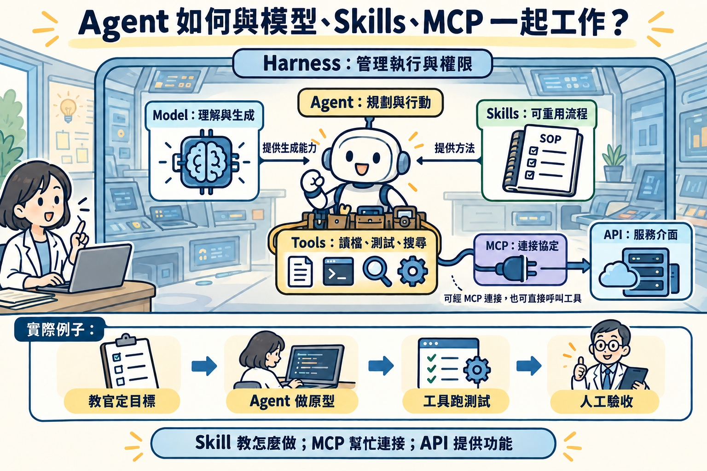
Prompt 描述這次任務。Skill 把重複工作整理成指令與資源，例如「先核對題目來源，再分開保存官方答案與 AI 解析」。Skill 可包含 SKILL.md、腳本及範本；各產品支援方式需確認。
API 是程式功能的介面；MCP 是 AI 應用與外部工具、資料互通的標準協定。例如 Agent 經 MCP 使用擷取工具，工具再呼叫 Firecrawl API。加入 MCP 不會自動取得所有權限。
Sandbox 限制可接觸的環境；Harness 涵蓋更廣的執行管理。Agent 在允許的範圍內仍可能改檔、跑命令或連網。先看目前工作區與工具權限，才知道影響範圍。
教官的應用：Agent 建立 AED 模擬介面；Skill 提供固定教材流程；瀏覽器工具測試按鈕；Harness 留下測試與修改紀錄。醫療步驟仍以核准教材為依據。
Rules 與 Skill 的完整對照、同一題庫案例與權限限制，見下方「規則與流程」組。
交代 AI 在適用範圍內應遵守的做法、限制與偏好。例如「使用繁體中文」「只使用虛構資料」「未核准不得改動題目答案」。適用範圍可能是個人、專案或特定檔案，依產品設定決定，不代表寫下就永遠生效。
分類：規則與流程 → 協作準則。重點是「這個範圍內，做事要遵守什麼？」
醫療救護例子：題庫專案的 Rules 指定保留來源、區分核准答案與 AI 解析，公開前由教學者確認授權與內容。
把一類任務的操作方法、檢查步驟與所需資源整理成可重用單元，可包含指令文件、範本、腳本及參考資料。由使用者選用，或依工具支援方式在合適任務中載入；不保證安裝後自動執行，也不等於模型重新受訓。
分類：規則與流程 → 任務方法與資源。重點是「遇到這類任務，如何有步驟地完成？」
醫療救護例子：「題庫匯入 Skill」依序檢查來源、整理題幹與選項、標示缺漏、保留核准答案，再輸出指定格式；來源或答案不確定時交由人確認。
描述這次要完成什麼、輸入在哪裡、輸出格式與驗收條件。可以要求依照適用 Rules，並選用相關 Skill，但不是每次都要重貼整套工作方法。
同一案例：「請把這三題虛構練習題整理成核准的 JSON 格式，先列出計畫與缺漏，暫不修改檔案。」
| 比較面向 | Rules | Skill |
|---|---|---|
| 主要用途 | 約定行為、限制與偏好 | 提供完成某類任務的方法與資源 |
| 常見內容 | 資料限制、書寫格式、需人工核准的事項 | 步驟、檢查清單、範本、腳本、參考文件 |
| 何時適用 | 依設定的範圍、條件與載入方式 | 該技能被選用或符合工具的觸發條件時 |
| 題庫例子 | 不得自行修改核准答案 | 如何轉換題庫格式、檢查缺題與重複題 |
| 共同限制 | 都是協作指引，不能保證 AI 正確，也不會自動授予工具權限。醫療內容仍需專業覆核。 | |
怎麼選？經常要遵守的協作準則放 Rules；反覆出現的任務方法整理成 Skill；這次的目標與素材寫在 Prompt。兩者可以重疊，Skill 內也能有任務專用規則；不必為了使用 Rules 就先建立 Skill。實際檔名、載入優先順序與支援格式依使用工具而異。
本節比較通用概念，不代表某產品的固定設定路徑。載入第三方 Skill 前，先閱讀內容、確認來源與檔案／網路操作，使用假資料及最低必要權限測試。
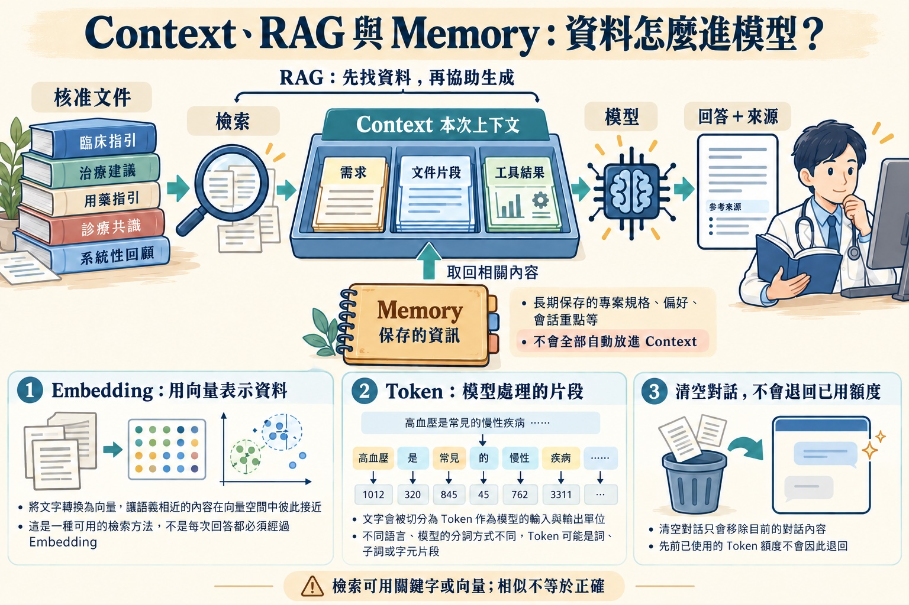
Context 是當下送給模型的工作資料。Memory 是跨次保存的資訊機制，例如偏好或專案紀錄；要被取回、加入本次上下文，模型才可能使用。把重要決定寫進 README 或 SPEC.md，比假設聊天永遠記得更可靠。
Embedding 把文字等資料表示成數字向量，方便比較相似性；向量資料庫可保存並搜尋這些向量。相似不代表正確，也不代表文件版本有效。小型題庫可以先用主題標籤或關鍵字搜尋。
Firecrawl 取得網頁內容；RAG 在回答時取用資料；模型訓練調整參數。三者做的事不同。取得官方網頁後，仍要核對日期、擷取缺漏與適用範圍。
Token 是處理單位；上下文容量是一次能容納的範圍；使用額度與帳單是產品的計量規則。縮短或清空對話不會退回已消耗額度。省用量可先限定檔案與問題，保留必要錯誤證據和測試。
醫師的應用：針對虛構病例，從核准教學文件找相關段落，再比較自己的推理與 AI 草稿；保留來源，回查原文。
後端也可依需求連接 LINE、AI 或其他服務；這些是分支，不必先通過資料庫。純靜態練習可以只有前端。
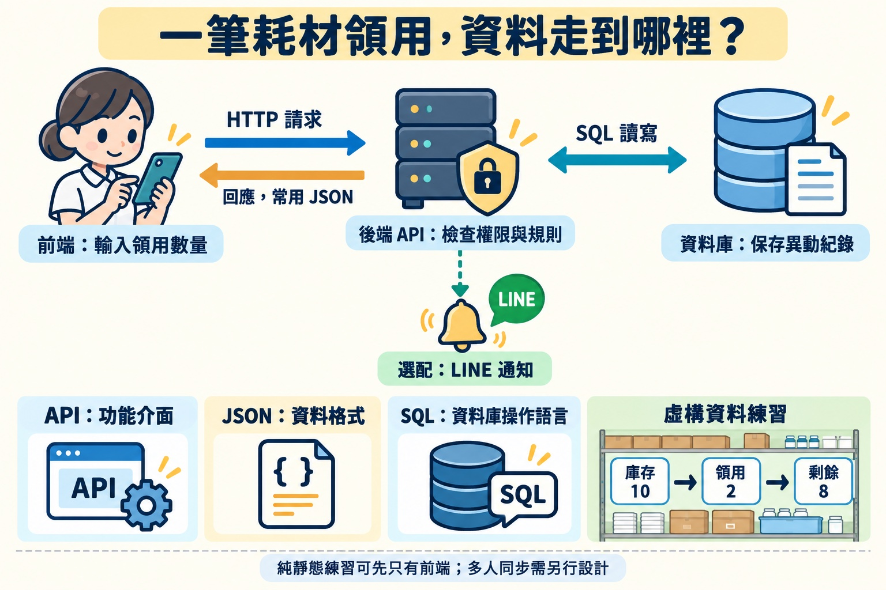
API 定義可用功能；HTTP 是常見網路溝通協定；JSON 是常見資料格式。JSON 不是資料庫，也不是所有 API 都必須使用它。
耗材例子：GET 讀取品項；POST 提交領用。伺服器回傳結果，畫面再更新。HTTP 狀態碼 200 常表示成功、400 表示請求問題、401 表示缺少有效驗證、403 表示拒絕存取、500 表示伺服器錯誤。
資料庫保存資料；SQL 是操作關聯式資料庫的語言。先分清「品項表」與「領用異動表」，再考慮查詢語法。例如 SELECT 查詢、WHERE 篩選、JOIN 連接資料、GROUP BY 彙整。
多人同時領用時，需要讓檢查與扣庫存一致完成，通常涉及交易 Transaction。只在畫面上減數字，不能解決多人同步。
localStorage 保存在目前瀏覽器與網站來源下，不是跨裝置同步。試算表方便整理，但多人寫入、權限、稽核和一致性需另外設計。資料庫也不會自動讓系統安全，仍需設定存取與備份。
Authentication 確認「你是誰」；Authorization 決定「你能做什麼」。Cache 快取常保存可重用結果；Object Storage 適合圖片、影片等檔案。這些服務依需求加入，不是初版的必備配備。
醫護人員的應用：介面接收領用數量；後端確認權限與庫存；資料庫保存異動。學員應能說明資料存在哪裡，以及重整畫面後會不會保留。
想把名詞變成操作？閱讀 React × Apps Script × Sheets 的全端架設流程，依序驗證畫面、後端、資料與發布。本頁仍是概念圖，不代表已建好這套後端。
搜尋或擷取公開網頁，整理成 Markdown 等資料供人與 AI 使用。內容完整性、授權與官方答案需人工核對。看單頁擷取練習。
查詢與更新關聯式資料庫的語言。耗材管理先想清楚品項、數量、異動與權限；真正連資料庫時再學 SELECT、條件查詢與安全更新。
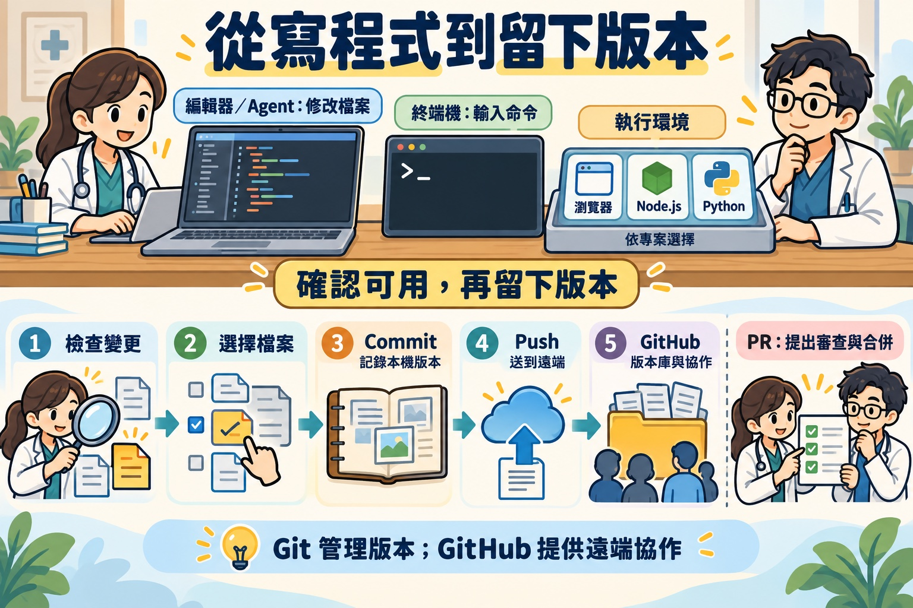
Command-Line Interface：透過輸入文字命令來操作程式的介面，例如查詢版本、啟動專案或執行測試。CLI 是操作方式，不是某一個特定軟體，也不是 AI 模型。
練習例子：在終端機輸入 git status，查看練習專案有哪些檔案改動；需先安裝 Git 並位於版本庫中。使用 CLI 不必背完所有命令，先理解指令用途與目前所在資料夾。
分類：開發與發布 → 工具操作介面。CLI 也是使用者介面的一種，與圖形介面的按鈕操作方式不同。
終端機提供文字輸入與輸出的視窗；Shell（命令殼層）解讀命令並啟動程式，例如 zsh 或 Bash；CLI 則是工具提供的文字命令操作介面。三者常一起使用，但不是同義詞。
Python 可執行 Python 程式；Node.js 讓 JavaScript 在瀏覽器之外執行；pip 與 npm 常用來管理各自生態的套件。純 HTML/CSS/JavaScript 網站可以直接用瀏覽器，不需要為了「使用 AI」全部安裝。
Git 是版本控制工具，Commit 記錄本機版本；GitHub 是提供遠端版本庫與協作功能的平台。Branch 分支用於隔開工作；PR 提出審查；Merge 將變更合併。Pull 會取得並整合遠端變更，可能需要處理衝突。
先記錄可重現步驟與預期／實際差異，再找根因、做小修正、重跑測試並提交。不要把「AI 說修好了」當作測試證據；保留可回查的穩定版本。
EMT 的應用：修改 AED 模擬按鈕前保留版本；修好連按造成的跳步後，重測正常操作和重新開始。
人與 Agent 都容易閱讀的純文字格式，適合保存 SPEC、README、安全規則與交接紀錄。
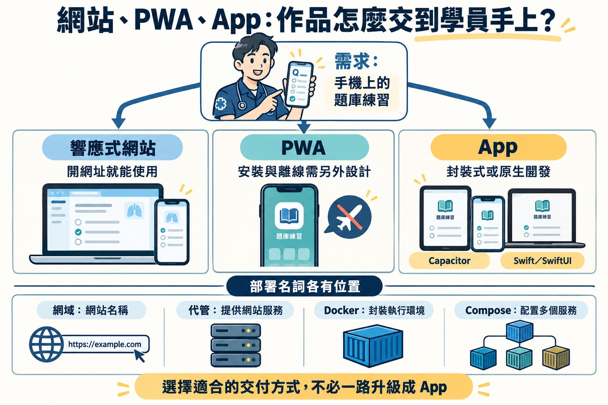
Capacitor 可把 Web 專案帶進原生平台，並透過外掛使用裝置功能；Swift 是程式語言，SwiftUI 是 Apple 平台介面框架。封裝或原生 App 都需要平台測試與發布流程，不是改副檔名就能上架。
Image 是打包範本；Container 是依映像執行的環境；Compose 描述多服務如何配置。它們協助一致地執行程式，不能取代程式本身、資料庫設計或網站代管。進入 Docker 與 Firecrawl 補充。
靜態代管供應 HTML、CSS、JavaScript；自訂後端需支援相應執行環境的服務。網域是名稱，DNS 幫忙解析名稱，HTTPS 保護傳輸。買了網域仍需要網站代管；上傳 compose.yaml 到 Pages 不會啟動容器。
CI 可自動檢查整合後的程式；CD 可協助交付或部署。成功建置不代表醫療內容已覆核。部署後還要用實際網址確認功能、圖片與手機操作，並保留更新和回復方式。
教學者的應用：先分享可在手機開啟的題庫網站；確定有離線需求再設計 PWA，需要更深入裝置功能時再評估 App。
參考：MDN：PWA、Capacitor 文件。
User Interface：人與系統互動的介面。在網站中，常見的 UI 包括按鈕、表單、文字、顏色、圖示與版面排列，不只是裝飾或美化。
練習例子：耗材網站的「領用」按鈕是否夠大、數量欄位是否標出單位、錯誤文字是否清楚可讀。
分類：介面與體驗 → 介面呈現與控制。GUI 是圖形使用者介面；CLI 是命令列介面，兩者都是 UI 的形式。
User Experience：使用者在使用產品前、使用中與使用後的整體感受與經驗，包括是否容易理解、能否順利完成任務、等待與出錯時是否得到協助，以及是否信任結果。
練習例子：學員能否順利選題、作答、看懂錯誤原因，再回到錯題複習；領用人員輸入錯誤數量後，能否保留已填資料並輕鬆修正。
分類：介面與體驗 → 使用流程與整體感受。UX 不只等於操作步驟，也包含速度、可及性、回饋與使用情境。
UI 問「透過什麼介面操作？」；UX 問「整個任務是否好理解、好完成？」；CLI 是「用文字命令操作」的 UI 形式。漂亮的畫面不保證好用；命令列工具也需要清楚提示、合理預設與錯誤復原，才能有良好 UX。
給 AI 的需求例子：「請把領用按鈕與數量單位標示清楚（UI）；送出前確認品項及數量，失敗時保留輸入並告訴我如何修正（UX）。」
設計系統維持元件一致；測試與使用者回饋檢查這套設計是否真的可用。
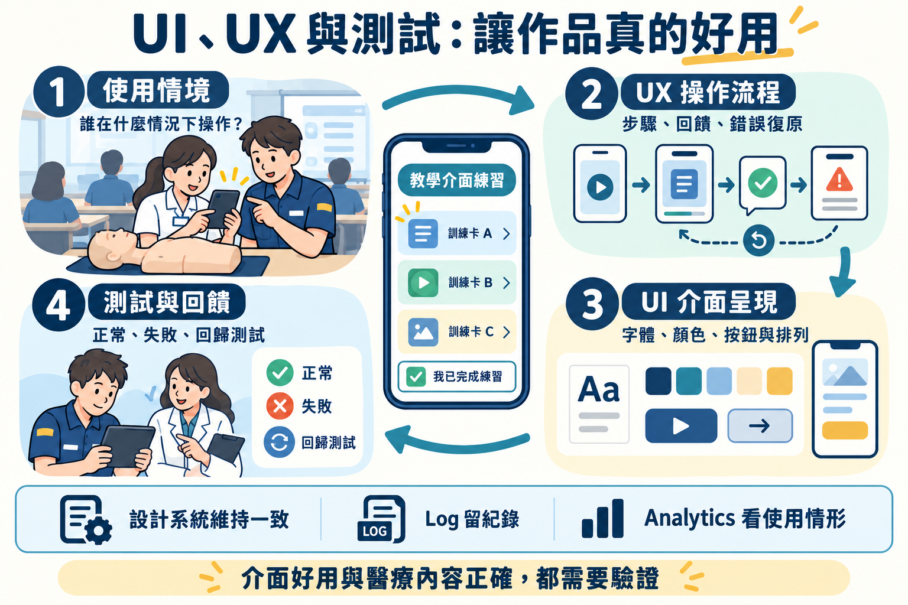
比「做漂亮一點」更具體的說法是：「使用者是操作訓練機的 EMT，手機直向使用；主要操作一步可見，按鈕有文字標籤，錯誤時說明原因與恢復方法。請先展示流程與畫面草圖。」
QA 是維持品質的做法；測試提供實際行為的證據；Debug 找出並修正原因。用正常、錯誤、邊界與回歸案例測試，再由學員實際操作。自動測試通過與醫療內容正確，是不同的驗證工作。
Log 協助追查事件；Analytics 彙整使用行為；回饋說明使用者的感受和困難。雷達圖能呈現練習面向，仍應顯示題數、來源和時間，不能用一次少量作答就斷言專業能力。
教官的應用：觀察學員是否找得到「重新開始」；醫師／教學者再確認案例內容。介面方便與內容可信，都要各自驗證。
限制程式或 Agent 能接觸的檔案、命令與網路範圍，降低錯誤的影響半徑。
在人機流程中預先設計必須由人檢查或批准的節點，不是出事後才補簽名。
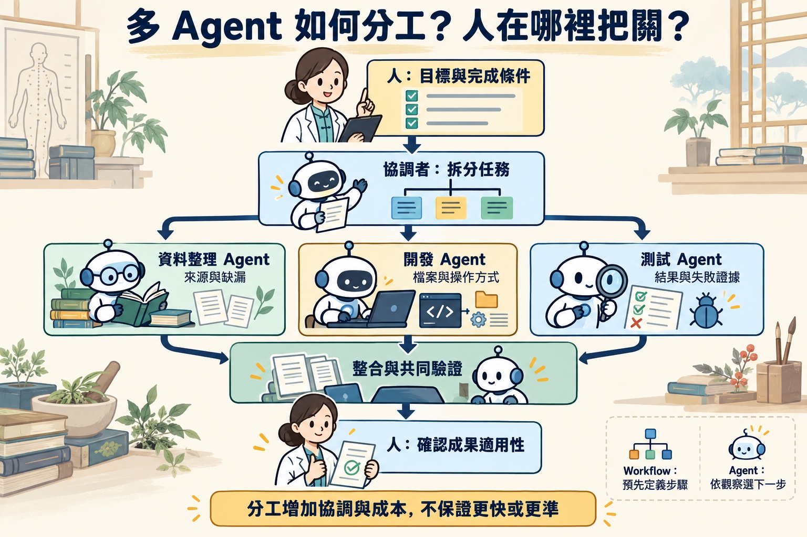
Workflow 偏向預先定義的步驟；Agent 可依觀察選擇下一步。實務上常混合使用，例如固定「取得資料 → 核對 → 匯入」流程，其中由 Agent 協助整理缺漏。
工作可明確拆開、各自有輸入輸出與驗收方式時較適合，例如一個做題庫格式檢查，一個測試介面。只改一段文字通常不值得成立一個團隊。
不同 Agent 仍可能共享同樣錯誤。審查要提出來源、測試和可重現證據；模型數量不能替代醫療專業覆核。
先建立安全工作桌，再開始對話
ems-ai-lab/
├── SPEC.md
├── README.md
├── SECURITY.md
├── data/
│ └── sample.csv
├── output/
└── tests/原始資料放 data，產出放 output。不要讓 Agent 直接覆蓋唯一一份原始檔。
# 專案名稱
## 使用者與情境
- 誰使用：
- 何時使用：
## 輸入／輸出
- 輸入：
- 輸出：
## 核心流程
1.
2.
3.
## 本次不做
- 不使用真實資料
- 不自動公開發布
## 完成條件與測試
- 正常案例：
- 錯誤案例：先規劃，再允許修改
只開放目前專案資料夾，先要求讀取 SPEC.md。
先列檔案、工具、風險與測試，不要立即修改。
一次建立最小版本，完成後先測試。
檢查畫面、Log、測試結果與修改檔案。
以虛構資料做一條核心流程；每一步都能停下來核對。
請先閱讀 SPEC.md，不要立即修改。
先回覆：
1. 你理解的唯一核心流程。
2. 預計建立或修改的檔案。
3. 需要的工具與權限。
4. 兩個測試案例。
5. 目前看見的風險。
限制：只使用本專案中的虛構資料；輸出放在 output；
不改 data 原始檔；不下載、不登入、不外傳、不刪除、不發布，
除非我另行確認。測試不是展示成功，而是刻意製造失敗
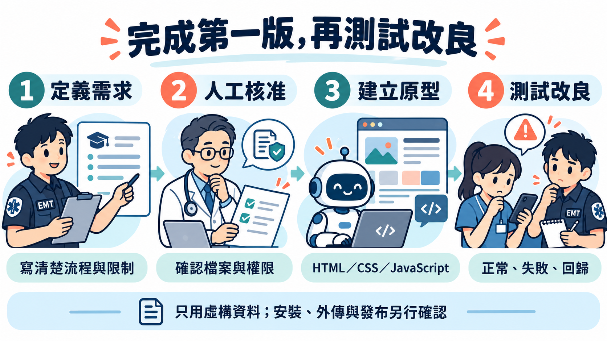
一筆完整、格式正確的資料，能走完核心流程。
空白、負數、錯誤格式、重複資料或不存在的檔案。
增加功能後，原本成功的兩個案例仍然成功。
知道上一個穩定版本在哪裡，必要時能撤回。
請先停止新增功能。
根據以下資訊診斷，不要一次修改多個假設：
- 位置：哪一頁／哪個功能
- 重現步驟：
- 預期結果：
- 實際結果：
- 完整錯誤訊息／Log：
先說明最可能原因、要檢查的檔案與最小修正方式；
修正後重跑原本成功的測試與這次失敗案例。能做不代表能公開
只在自己的瀏覽器練習，可先用靜態網頁與假資料；多人同步、登入或 LINE 通知才需要另外設計服務。
先發布沒有敏感資料的靜態網站
先確認檔案與秘密資料，再選擇上傳方式；首次上課可直接用 GitHub 網頁上傳。
git status 看改了什麼。.env；再逐項加入。若作品加入 Docker 或資料庫，先看 容器系統與靜態網站代管的差別。compose.yaml 不能直接放到 GitHub Pages 執行。
index.html。netlify.app 網址，用手機測試。main 與根目錄。username.github.io/repository 網址。project.pages.dev。project.vercel.app。請先做公開發布檢查，不要直接上傳。
1. 列出準備公開的所有檔案。
2. 搜尋姓名、病歷號、Email、電話、院內網址、絕對路徑。
3. 搜尋 API Key、Token、密碼、.env 與秘密設定。
4. 確認根目錄有 index.html，所有連結與圖片使用相對路徑。
5. 在本機啟動並測試手機寬度、重新整理與錯誤頁面。
6. 更新 README：用途、限制、資料來源、授權與回復方式。
完成後只回報檢查結果與預計上傳清單，等待我人工確認。不要只問喜不喜歡
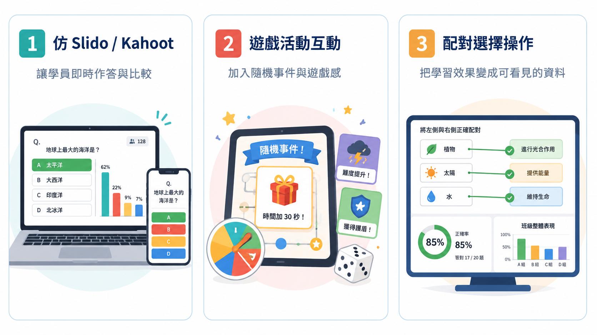
15 人的小班資料適合形成性改善，不宜宣稱一般化成效。收集前先說明目的、保存期限與誰能看到；個人表現不要公開排名。
延伸學習
跟著 12 個步驟，先定義需求與資料欄位，再驗證後端、串接前端、測試與發布。以虛構題庫帶入，補充環境變數、權限、重複提交與多人資料問題。
現有學習站保持純靜態；React 建置工作流只用於另開的練習專案。沒有資料庫需求時，不必升級架構。
想把同一版訓練網站交給各組，或把核准網頁整理成題庫草稿？先分清執行環境、服務配置與資料取得這三件事。
像一套規格一致的訓練箱。Image 是打包範本，Container 是正在執行的環境。
認識 Docker 名詞用一份 compose.yaml 管理網站、API 與資料庫；入門先練習一個網站的啟動、Log 與停止。
安裝與本機操作先找候選頁，取得允許使用的單頁內容，再核對來源、日期、缺漏與答案。
題庫來源整理練習Docker 不會自動提供公開網址；Firecrawl 雲端服務不需要先安裝 Docker。初學者可先看示範，原本的靜態網站練習仍可獨立完成。
先建立人的能力，再讓 AI 協作
卡住時先縮小問題
不一定。主課程先做 HTML／CSS／JavaScript 靜態網站；Python 只在使用腳本或本機伺服器時需要。Git 可用網頁上傳暫代；VS Code 是閱讀程式的選項。Node.js 只有使用 npm、現代前端框架或特定工具時才需要。若安裝遇到問題，先使用同組電腦或免安裝方案。
可以。學習目標是把需求寫清楚、讓 Agent 先規劃、看懂測試結果並控制風險，不是背語法。
先確認檔案位於目前專案資料夾、名稱與路徑正確，而且平台已取得該資料夾權限。不要因為讀不到就開放整台電腦。
不建議把課堂原型直接當正式系統。前端不得放秘密金鑰；Webhook、帳號、資料庫與病人資料需要後端、驗證、權限、Log、備份與正式資安治理。
先得到平台免費子網域；若要自己的 .com 或 .tw，通常需要向網域註冊商購買，再依平台文件設定 DNS。
介面、免費額度與方案條款可能調整；請以官方頁面為準。
完成一輪，不等於正式上線
能做、值得做、可以正式使用，是三個不同的判斷。若下一步要接真實資料、LINE、資料庫或正式網域，請停止自行擴充，改啟動機構治理。